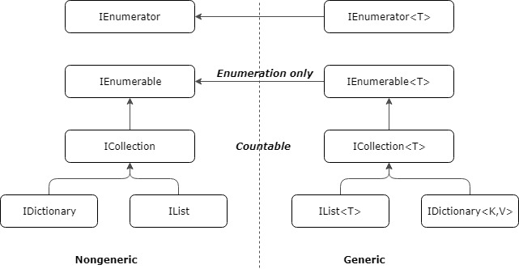
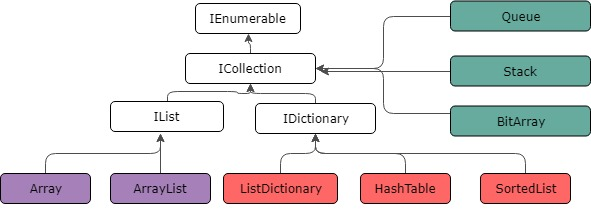

Coleções¶
Para muitos aplicativos, você desejará criar e gerenciar grupos de objetos relacionados.Dados semelhantes podem normalmente ser tratados com mais eficiência quando armazenados e manipulados como uma coleção. Você pode usar classes de System.Array ou as classes dos namespaces: System.Collections, System.Collections.Generic, System.Collections.Concurrent e System.Collections.Immutable para adicionar, remover e modificar elementos individuais ou um intervalo de elementos em uma coleção.
Há dois tipos principais de coleções; coleções genéricas e coleções não genéricas. Coleções genéricas são fortemente tipadas em tempo de compilação. Por isso, coleções genéricas normalmente oferecem melhor desempenho. Coleções genéricas aceitam um parâmetro de tipo quando são criadas e não exigem que você converta de e para o tipo Object ao adicionar ou remover itens da coleção. As coleções não genéricas armazenam itens como Object e exigem a conversão.
As coleções do namespace System.Collections.Concurrent fornecem operações eficientes de thread-safe para acessar itens de coleção de vários threads. As classes de coleção imutáveis do namespace System.Collections.Immutable são inerentemente seguras ao thread porque as operações são executadas em uma cópia da coleção original e a coleção original não pode ser modificada.
{kind=link}

{kind=link}

Recursos comuns de uma coleção¶
Todas as coleções fornecem métodos para adicionar, remover ou localizar itens na coleção. Além disso, todas as coleções que direta ou indiretamente implementam a interface ICollection ou a interface ICollection<T> compartilham estes recursos:
A capacidade de enumerar a coleção- As coleções que implementam
System.Collections.IEnumerableouSystem.Collections.Generic.IEnumerable<T>permitem que a coleção seja iterada. Um enumerador pode ser considerado um ponteiro móvel para qualquer elemento da coleção. A instruçãoforeach,ine a InstruçãoFor Each...Nextusam o enumerador exposto pelo métodoGetEnumeratore ocultam a complexidade de manipulação do enumerador. Além disso, qualquer coleção que implementaSystem.Collections.Generic.IEnumerable<T>é considerada um tipo passível de consulta e pode ser consultada com LINQ. Consultas LINQ fornecem um padrão comum para o acesso de dados. Elas são geralmente mais concisas e legíveis que loopsforeachpadrão e fornecem filtragem, classificação e agrupamento de recursos. Consultas LINQ também podem melhorar o desempenho. A capacidade de copiar o conteúdo da coleção para uma matriz- Todas as coleções podem ser copiadas para uma matriz usando o método
CopyTo; no entanto, a ordem dos elementos na nova matriz se baseia na sequência na qual o enumerador os retorna. A matriz resultante é sempre unidimensional com um limite inferior de zero. Propriedades de capacidade e contagem- A capacidade de uma coleção é o número de elementos que ela pode conter. A contagem de uma coleção é o número de elementos que ela realmente contém. Algumas coleções ocultam a capacidade ou a contagem ou ambas.
A maioria das coleções se expande automaticamente em capacidade quando a capacidade atual é atingida. A memória é realocada e os elementos são copiados da coleção antiga para a nova. Isso reduz o código necessário para usar a coleção; no entanto, o desempenho da coleção pode ser afetado de forma negativa. Por exemplo, para
List<T>, seCountfor menor queCapacity, a adição de um item será uma operaçãoO(1). Se a capacidade precisar ser aumentada para acomodar o novo elemento, adicionar um item se tornará uma operaçãoO(n), em quenéCount. A melhor maneira de evitar um desempenho ruim causado por várias realocações é definir a capacidade inicial para que seja o tamanho estimado da coleção. UmBitArrayé um caso especial; sua capacidade é a mesma que seu comprimento, que é o mesmo de sua contagem. Um limite inferior consistente- O limite inferior de uma coleção é o índice do seu primeiro elemento. Todas as coleções indexadas nos namespaces
System.Collectionstêm um limite inferior de zero, indicando que são indexados em 0.Arraytem um limite inferior de zero por padrão, mas um limite inferior diferente pode ser definido ao criar uma instância da classe de matriz usandoArray.CreateInstance. Sincronização para acesso de vários threads (somente classes de System.Collections)- Tipos de coleção não genérica no namespace
System.Collectionsoferecem algum acesso thread-safe com sincronização; geralmente exposto por meio dos membrosSyncRooteIsSynchronized. Essas coleções são não thread-safe por padrão. Se você precisar de acesso com multithread escalável e eficiente para uma coleção, use uma das classes no namespaceSystem.Collections.Concurrentou considere usar uma coleção imutável.
Coleções associativas¶
As coleções associativas armazenam um valor na coleção fornecendo uma chave que é usada para adicionar/remover/procurar o item.
Dictionary<TKey,TVale>¶
A classe Dictionary<TKey,TVale> é provavelmente a classe associativa mais utilizada visto ser a classe mais rápida para realizar operações de pesquisa, inclusão e exclusão. Isso é devido a utilização de uma hashtable; como as chaves são um hash, o tipo da chave deve implementar GetHashCode() e Equals() ou deve fornecer um IEqualityComparer externo para o dicionário em construção.
As operações de inclusão, exclusão e pesquisa de itens no dicionário consomem um tempo constante amortizado de O(1), o que significa que não importa quão grande o dicionário fica, o tempo gasto para encontrar algo permanece relativamente constante. Isso é altamente desejável para realizar pesquisas com ótimo desempenho.
A única desvantagem é que o dicionário, por usar uma hashtable, não é ordenado.
// Adiciona elemento
dic.Add("abacaxi", "3,50");
dic.Add("uva", "8,25");
dic.Add("pera", "5,70");
dic.Add("banana", "2,00");
dic.Add("tomate", "2,50");
// Adiciona um elemento de forma segura.
// Caso chave já exista, não gera ArgumentException.
dic.TryAdd("tomate", "4,50");
// Verifica se a chave existe.
var possuiUva = dic.ContainsKey("uva");
// Obtêm o valor.
var valorUva = dic["uva"];
Console.WriteLine("Possui uva = {0}, Valor = {1}", possuiUva, valorUva);
// Obtêm o valor de forma segura.
// Caso chave não exista, retorna o valor default do tipo, não gera KeyNotFoundException.
string valorLaranja;
var possuiLaranja = dic.TryGetValue("laranja", out valorLaranja);
Console.WriteLine("Possui laranja = {0}, Valor = {1}", possuiLaranja, valorLaranja);
// Define outro valor
dic["uva"] = "9,50";
// Verifica se existe um determinado valor
var possuiValor = dic.ContainsValue("2,00");
Console.WriteLine("Possui Valor 2,00 = {0}", possuiValor);
// Remove item
dic.Remove("banana");
// Obtêm quantidade de itens existentes
Console.WriteLine("Total = {0}",dic.Count());
// Iteração
foreach(var item in dic)
Console.WriteLine("Chave = {0}, Valor = {1}", item.Key, item.Value);
// Saída:
// Possui uva = True, Valor = 8,25
// Possui laranja = False, Valor =
// Possui Valor 2,00 = True
// Total = 4
// Chave = abacaxi, Valor = 3,50
// Chave = pera, Valor = 5,70
// Chave = tomate, Valor = 2,50
// Chave = uva, Valor = 9,50
SortedDictionary<TKey,TValue>¶
A classe SortedDictionary<TKey,TValue> usa uma árvore binária para manter os itens em ordem pela chave. Como consequência desta ordenação, o tipo usado para a chave deve implementar a interface IComparable<TKey> de modo que as chaves possam ser corretamente ordenadas.
O dicionário ordenado gasta um pouco de tempo a mais na pesquisa devido a capacidade de manter os itens em ordem, assim as operações de inclusão, exclusão e pesquisa possuem complexidade logarítmicas O(log n). SortedDictionary é indicado para realizar pesquisas rápidas, mas também quer ser capaz de manter a coleção em ordem pela chave.
var dic = new SortedDictionary<string, string>();
dic.Add("abacaxi", "3,50");
dic.Add("uva", "8,25");
dic.Add("pera", "5,70");
dic.Add("banana", "2,00");
dic.Add("tomate", "2,50");
foreach(var item in dic)
Console.WriteLine("{0}, {1}", item.Key, item.Value);
// Saída:
// abacaxi, 3,50
// banana, 2,00
// pera, 5,70
// tomate, 2,50
// uva, 8,25
SortedList<TKey,TValue>¶
A classe SortedList<TKey,TValue> é uma classe associativa ordenada que da mesma forma que SortedDictionary<TKey,TValue>, usa uma chave para classificar os pares chave-valor.
Ao contrário da classe SortedDictionary, no entanto, os itens em uma SortedList são armazenados como uma array ordenado de itens. Isto significa que inserções e deleções são lineares O(n) porque apagar ou adicionar um item pode implicar a transferência de todos os itens para cima ou para baixo na lista.
O tempo de pesquisa, porém, é O(log n) porque a coleção SortedList pode usar uma busca binária para encontrar qualquer item na lista por sua chave. SortedList é recomendado para realizar pesquisas rápidas, e manter a coleção ordenada, mas realizar poucas operações de inclusão e remoção de itens.
As classes SortedDictionary e SortedList têm modelos de objeto semelhantes, e ambos têm recuperação O(log n). A diferença entre as duas classes está no uso da memória e na velocidade de inclusão e remoção de itens. Assim:
SortedList- usa menos memória;SortedDictionary- é mais rápido para inclusão de dados não ordenados;SortedList- é mais rápido para inclusão de dados já ordenados;SortedDictionary- é mais rápido para a remoção de dados;
Coleções não associativas¶
As coleções não associativas não usam chaves para manipular a coleção, mas contam com o próprio objeto a ser armazenado ou alguns outros meios (como índice) para manipular a coleção.
List<T>¶
A classe List<T> é uma estrutura de armazenamento básico contíguo. Algumas pessoas podem chamar isso de um vetor ou matriz dinâmica. Essencialmente ela é uma série de itens que crescem uma vez que sua capacidade atual for excedida.
Como os itens são armazenados de forma contígua como uma matriz, você pode acessar os itens na coleção List<T> usando um índice de forma muito rápida. No entanto inserir e remover itens que não seja no final de List<T> leva mais tempo porque você deve mudar todos os itens para cima ou para baixo quando for excluir ou inserir.
No entanto, a adição e remoção no final de uma List<T> é uma operação amortizada constante O(1). Normalmente uma List<T> é uma coleção padrão para uso quando você não tem quaisquer outras restrições e, normalmente, você deve dar preferência a utilização da coleção List<T> mesmo sobre matrizes, a menos quando temos a certeza que o tamanho continuará a ser absolutamente fixo.
LinkedList<T>¶
A classe LinkedList<T> é uma implementação básica de uma lista duplamente ligada. Como não usa memória contígua, você pode adicionar ou remover itens no meio de uma lista ligada muito rapidamente sem deslocar os outros items. Entretanto você perde a capacidade de indexar itens rapidamente pela sua posição.
Na maioria das vezes, tendemos a favorecer o uso da classe List<T> sobre LinkedList<T> a menos que você está fazendo um monte de inclusões e exclusões de itens na coleção, caso em que usar a classe LinkedList<T> pode fazer mais sentido.
HashSet<T>¶
A coleção HashSet<T> é uma coleção de itens exclusivos. Isto significa que a coleção não pode ter itens duplicados e nenhuma ordem é mantida. Logicamente, isso é muito semelhante a ter um coleção Dictionary<TKey,TValue> onde o TKey e TValue referem-se ao mesmo objeto.
A classe HashSet<T> baseia-se no modelo de conjuntos matemáticos e fornece operações de conjuntos de alto desempenho semelhantes a acessar as chaves das coleções Dictionary<TKey, TValue> ou Hashtable. Em termos simples, a classe HashSet<T> pode ser considerada como uma coleção Dictionary<TKey, TValue> sem valores.
Seu uso é indicado para listas não ordenadas que devem ter valores únicos e com buscas rápidas.
SortedSet<T>¶
A coleção SortedSet<T> é uma coleção de itens exclusivos que mantém uma ordem classificada quando elementos são inseridos e excluídos sem afetar o desempenho.
Uma coleção SortedSet<T> utiliza árvore binária. Isto significa que as operações de inclusão, remoção e pesquisas são logarítmica O(log n), mas existe um ganho na habilidade de iterar sobre os itens em ordem. Para esta coleção ser eficaz, o tipo T deve implementar a interface IComparable<T> ou você precisa fornecer um IComparer<T> externo.
Stack<T>, Queue<T>¶
As coleções Stack<T> e Queue<T> são duas coleções que permitem lidar com uma coleção sequencial de objetos de forma muito específica.
A coleção Stack<T> é um recipiente LIFO (last in first out) onde os itens são adicionados e removidos do topo da pilha. Normalmente, isso é útil em situações onde você quer empilhar ações e, em seguida, ser capaz de desfazer essas ações em ordem inversa, conforme necessário.
A coleção Queue<T> por outro lado é um recipiente FIFO (firs-in first-out) que adiciona itens no final da fila e remove itens a partir da inicio. Isso é útil para situações onde você precisa processar os itens na ordem em que eles vieram, como um spooler de impressão ou filas de espera.
Array¶
As matrizes são mais úteis para criar e trabalhar com um número fixo de objetos fortemente tipados. Você pode armazenar diversas variáveis do mesmo tipo em uma estrutura de dados de matriz. Você pode declarar uma matriz especificando o tipo de seus elementos. Se você quiser que a matriz armazene elementos de qualquer tipo, você pode especificar object como seu tipo. No sistema de tipos unificado do C#, todos os tipos, predefinidos e definidos pelo usuário, tipos de referência e tipos de valor, herdam direta ou indiretamente de Object.
- Uma matriz pode ser unidimensional, multidimensional ou irregulares (ou denteadas).
- O número de dimensões e o tamanho de cada dimensão são estabelecidos quando a instância de matriz é criada. Esses valores não podem ser alterados durante o ciclo de vida da instância.
- Uma matriz pode ter no máximo 32 dimensões.
- Os valores padrão dos elementos de matriz numérica são definidos como
0(zero), e os elementos de referência são definidos comonull. - Uma matriz irregular é uma matriz de matrizes e, portanto, seus elementos são tipos de referência e são inicializados para
null. - As matrizes são indexadas por zero: uma matriz com elementos n é indexada de 0 para n-1.
- Os elementos de matriz podem ser de qualquer tipo, inclusive um tipo de matriz.
- Os tipos de matriz são tipos de referência derivados do tipo base abstrato
System.Array. Como esse tipo implementaIEnumerableeIEnumerable<T>, você pode usar a iteraçãoforeachem todas as matrizes em C#.
Note
Array é um tipo histórico que existe desde a época em que não existiam coleções genéricas em C#. A classe Array não faz parte dos namespaces System.Collections. No entanto, ainda é considerado uma coleção porque é baseado na interface IList.
Matrizes unidimensionais T[] implementam as interfaces genéricas System.Collections.Generic.IList<T>, System.Collections.Generic.ICollection<T>, System.Collections.Generic.IEnumerable<T>, System.Collections.Generic.IReadOnlyList<T> e System.Collections.Generic.IReadOnlyCollection<T>. As implementações são fornecidas para arrays somente em tempo de execução, portanto, as interfaces genéricas não aparecem na sintaxe de declaração da classe Array. Alguns métodos de ICollection<T> não funcionariam para arrays, como o método Add() por exemplo.
A classe Array é a classe base para implementações de linguagem que oferecem suporte a arrays. No entanto, apenas o sistema e os compiladores podem derivar explicitamente da classe Array. Os usuários devem empregar as construções de array fornecidas pela linguagem.
Matrizes unidimensionais¶
Uma matriz unidimensional pode ser declarada da seguinte forma:
int[] array = new int[5];
Uma matriz unidimensional pode ser declarada e instanciada na mesma instrução (mesma linha) da seguinte forma:
int[] array = new int[] { 1, 3, 5, 7, 9 };
// Ou
int[] array = { 1, 3, 5, 7, 9 };
Iteração¶
Iterando uma matriz unidimensional:
string[] array = new string[5];
// Usando foreach
foreach (var item in array)
Console.WriteLine(item);
// Usando for
for (int i = 0; i < array.Length; i++)
Console.WriteLine(array[i]);
// Usando o método Array.ForEach<T>
Array.ForEach(array, Console.WriteLine);
// Saída:
// Maria
// João
// Sara
// Lucas
Iterando uma matriz incompleta:
int[] array = new int[5];
array[0] = 1;
array[3] = 4;
foreach (var item in array)
Console.WriteLine(item);
// Saída:
// 1
// 0
// 0
// 4
// 0
Concatenação¶
Ao contrário das classes nos namespaces System.Collections, Array tem uma capacidade fixa. Para aumentar a capacidade, você deve criar um novo objeto Array com a capacidade necessária, copiar os elementos do objeto Array antigo para o novo e excluir o Array antigo.
Concatenando usando o método Array.CopyTo:
int[] arrayA = {1, 2};
int[] arrayB = {3, 4, 5};
// Criar nova matriz com o tamanho para as duas matrizes.
int[] arrayAB = new int[arrayA.Length + arrayB.Length];
// Copia arrayA na posição 0.
arrayA.CopyTo(arrayAB, 0);
// Copia arrayB depois da ultima posição de arrayA.
arrayB.CopyTo(arrayAB, arrayA.Length);
Array.ForEach(arrayAB, Console.WriteLine);
// Saída
// 1
// 2
// 3
// 4
// 5
Concatenando usando os métodos Array.Resize + Array.Copy:
int[] arrayA = {1, 2};
int[] arrayB = {3, 4, 5};
// Aumenta o tamanho de arrayA para conter as duas matrizes.
Array.Resize(ref arrayA, arrayA.Length + arrayB.Length);
// Copia arrayB desde a posição 0 para arrayA na posição que casa arrayB
// até o ultimo elemento de arrayB.
Array.Copy(arrayB, 0, arrayA, arrayA.Length - arrayB.Length, arrayB.Length);
Array.ForEach(arrayA, Console.WriteLine);
// Saída
// 1
// 2
// 3
// 4
// 5
Podemos também usar o método Concat da classe System.Linq.Enumerable:
int[] arrayA = {1, 2};
int[] arrayB = {3, 4, 5};
var arrayAB = arrayA.Concat(arrayB).ToArray();
Array.ForEach(arrayAB, Console.WriteLine);
// Saída
// 1
// 2
// 3
// 4
// 5
Matrizes multidimensionais¶
Uma matriz multidimensional pode ser declarada da seguinte forma:
// Declara uma matriz de duas dimensões 2 x 3
int[,] array2x3 = new int[2, 3];
// Declara uma matriz de 3 dimensões 2 x 3 x 2
int[,,] array2x3x2 = new int[2, 3, 2];
Uma matriz multidimensional pode ser declarada e instanciada na mesma instrução da seguinte forma:
// Declara e define uma matriz de duas dimensões 2 x 3
int[,] array2x3 = { {1, 2, 3}, {4, 5, 6} };
// Declara e define uma matriz de duas dimensões 2 x 2 x 3
int[,,] array2x2x3 = { { {1, 2, 3}, {4, 5, 6} }, { {7, 8, 9}, {10, 11, 12} } };
Matrizes irregulares¶
Uma matriz irregular (ou denteada) pode ser declarada da seguinte forma:
// Declara uma matriz irregular 4x?
int[][] array = new int[4][];
// Define os valores da matriz na posição 0 e 1
array[0] = new int[4] { 1, 2, 3, 4 };
array[1] = new int[2] { 9, 10};
// Iterando a matriz
Array.ForEach(array, e => {
if (e != null)
{
Console.WriteLine("---");
Array.ForEach(e, Console.WriteLine);
}
});
// Saída
// ---
// 1
// 2
// 3
// 4
// ---
// 9
// 10
A classe System.Array fornece propriedades e métodos para criar, manipular, procurar e ordenar matrizes. Abaixo temos os mais importantes:
Propriedades¶
| Propriedade | Descrição |
|---|---|
| IsFixedSize | Retorna um valor indicando se um array possui um tamanho fixo ou não. |
| IsReadOnly | Retorna um a valor indicando se um array é somente-leitura ou não. |
| IsSynchronized | Retorna um a valor que indica se o acesso a um array é thread-safe ou não. |
| Length | Retorna o número total de itens em todas as dimensões de um array |
| Rank | Retorna o número de dimensões de um array |
| SyncRoot | Retorna um objeto que pode ser usado para sincronizar o acesso a um array. |
Métodos¶
| Métodos | Descrição |
|---|---|
| BinarySearch | Procura em um array unidimensional ordenado por um valor usando o algoritmo de busca binário. |
| Clear | Remove todos os itens de um array e define um intervalo de itens no array com valor zero. |
| Clone | Cria uma cópia do Array. |
| Copy | Copia uma seção de um array para outro array e realiza a conversão de tipos e boxing requeridas. |
| CopyTo | Copia todos os elementos do array unidimensional atual para o array unidimensional especificado iniciando no índice de destino especificado do array. |
| CreateInstance | Inicializa uma nova instância da classe Array. |
| GetEnumerator | Retorna um IEnumerator para o Array. |
| GetLength | Retorna o número de itens de um Array. |
| GetLowerBound | Retorna o primeiro item de um Array. |
| GetUpperBound | Retorna o último item de um Array. |
| GetValue | Retorna o valor do item especificado no Array. |
| IndexOf | Retorna o índice da primeira ocorrência de um valor em um array de uma dimensão ou em uma porção do Array. |
| LastIndexOf | Retorna o índice da última ocorrência de um valor em um array unidimensional ou em uma porção do Array. |
| Reverse | Reverte a ordem de um item em um array de uma dimensão ou parte do array. |
| SetValue | Define o item especificado em um array atual para o valor definido. |
| Sort | Ordena os itens de um array. |
Coleções não genéricas¶
As classes de coleção não genéricas são consideradas obsoletas. Você deve sempre favorecer as coleções genéricas ou concorrentes, e apenas usar as coleções não genéricas quando você está lidando com o legado. NET.
-
ArrayList: Uma coleção dinâmica e contígua de objetos. Preferir a coleção genéricaList<T>. -
Hashtable: Associativa, não-ordenada coleção de pares chave-valor dos objetos. Favorecer a coleção genéricaDictionary<TKey,TValue>. -
Queue: Coleção de objetos First-in-first-out (FIFO). Preferir a coleção genéricaQueue<T>. -
SortedList: Associativa, ordenou a coleção de pares chave-valor dos objetos. Favorecer a coleção genéricaSortedList<T>. -
Stack: Coleção de objetos Last-in-first-out coleção (LIFO). Favorecer a coleção genéricaStack<T>.
Coleções concorrentes¶
As coleções concorrentes estão incluídas no namespace System.Collections.Concurrent. Essas coleções são otimizados para uso em situações onde desejamos o acesso multi-threaded de leituras e escritas em uma coleção.
A seguir um resumo das coleções concorrentes:
-
ConcurrentQueue: versão Thread-safe da coleçãoQueue. -
ConcurrentStack: versão Thread-safe da coleçãoStack. -
ConcurrentBag: Coleção Thread-safe não ordenada de objetos - Otimizada para situações onde uma thread pode tanto ser lida como escrita. -
ConcurrentDictionary: versão Thread-safe de um dictionary. - Otimizada para leituras múltiplas; -
BlockingCollection: Os leitores podem bloquear até que os itens estejam disponíveis para leitura. Os escritores podem bloquear até que o espaço esteja disponível para escrever (se limitada).
Ao utilizar estas coleções considere que o acesso será protected o que afeta bastante o desempenho, neste caso verifique se a utilização de threads sincronizadas não o obteria um melhor desempenho.
Comparativo dos tipos de coleções¶
Em geral, você deve usar coleções genéricas. A tabela a seguir descreve alguns cenários comuns de coleção e as classes de coleção que você pode usar para esses cenários.
| Coleção genérica | Ordenado | Armaz. Contíguo | Acesso Direto | Pesquisa Amortizada1 | Manipulação Amortizada1 | Notas | Coleção thread-safe ou imutável |
|---|---|---|---|---|---|---|---|
Dictionary<Tkey,Tvalue> |
Não | Sim | Via Key | Key: O(1) | O(1) | Itens como pares chave/valor (busca rápida) | ConcurrentDictionary<TKey,TValue> ReadOnlyDictionary<TKey,TValue> ImmutableDictionary<TKey,TValue> |
SortedDictionary<Tkey,Tvalue> |
Sim | Não | Via Key | Key: O(log n) | O(log n) | Itens como pares chave/valor ordenado por árvore de pesquisa binária (comparado ao SortedList, possui busca mais lenta e manipulação mais rápida) | ImmutableSortedDictionary<TKey,TValue> |
SortedList<Tkey,Tvalue> |
Sim | Sim | Via Key | Key: O(log n) | O(n) | Semelhante ao SortedDictionary, mas ordenado por matriz (comparado ao SortedDictionary, possui busca mais rápida, manipulação mais lenta) | |
List<T> |
Não | Sim | Via Index | Index: O(1) Value: O(n) | O(n) | Itens de acesso por índice (Melhor para listas onde o acesso direto não é necessário e não há classificação). | ImmutableList<T> |
Array |
Não | Sim | Via Index | Index: O(1) Value: O(n) | O(1)* | Coleção de tamanho fixo com itens de acesso por índice (Melhor para listas de tamanho fixo onde o acesso direto não é necessário e não há classificação). | ImmutableArray<T> |
LinkedList<T> |
Não | Não | Não | Value: O(n) | O(1) | Acessar itens sequencialmente (Melhor para listas em que inserir / excluir no meio é comum e não é necessário acesso direto) | |
HashSet<T> |
Não | Sim | Via Key | Key: O(1) | O(1) | Lista Hash sem ordenação. | ImmutableHashSet<T> |
SortedSet<T> |
Sim | Não | Via Key | Key: O(log n) | O(log n) | Lista Hash com ordenação. | ImmutableSortedSet<T> |
Stack<T> |
Não | Sim | Only Top | Top: O(1) | O(1)* | Semelhante a List, exceto apenas o processo como LIFO | ConcurrentStack<T> ImmutableStack<T> |
Queue<T> |
Não | Sim | Only Front | Front: O(1) | O(1) | Semelhante a List, exceto apenas o processo como FIFO | ConcurrentQueue<T> ImmutableQueue<T> |
Um List<T> pode ser enumerado com eficiência usando for ou foreach.ImmutableList<T> no entanto, tem um trabalho insatisfatório dentro de um for devido a complexidade O(log n) do seu indexador. A enumeração de um ImmutableList<T> usando um foreach é eficiente porque o ImmutableList<T> usa uma árvore binária para armazenar seus dados em vez de uma matriz simples, como o List<T> usa. Uma matriz pode ser rapidamente indexada, enquanto uma árvore binária deve ser percorrido até que o nó com o índice desejado seja encontrado.
Além disso, SortedSet<T> tem a mesma complexidade que ImmutableSortedSet<T>. Isso porque ambos usam árvores binárias. É claro que a diferença significativa é que ImmutableSortedSet<T> usa uma árvore binária imutável. Como ImmutableSortedSet<T> também oferece uma classe System.Collections.Immutable.ImmutableSortedSet<T>.Builder que permite a mutação, você pode ter ambos, imutabilidade e desempenho.
Referências¶
- https://docs.microsoft.com/pt-br/dotnet/standard/collections/
- https://docs.microsoft.com/pt-br/dotnet/csharp/programming-guide/concepts/collections
- https://docs.microsoft.com/pt-br/dotnet/csharp/programming-guide/arrays/
- http://www.macoratti.net/10/05/c_arrays.htm
- https://jbcedge.com/2018/03/08/c-collections
- http://www.macoratti.net/12/12/c_col1.htm
-
A complexidade em "amortizado" se refere ao pior caso e é a soma do custo da operação sobre cada item dividido peno numero total de itens.
Exemplo: Em
List<T>.Add, para adicionar n itens, a complexidade no pior caso é: (1 + 1 + 1...n) = O(n). Portanto a complexidade amortizada é (1 + 1 + 1...n) / n = O(1). ↩↩